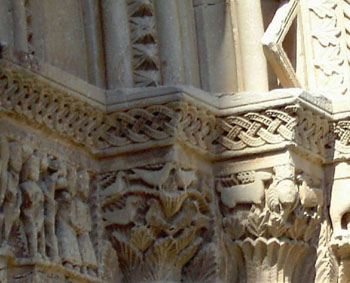

El Grup de Recerques i la web

El Grup de Recerques de les Terres de Ponent neix l'any 1976 i s'inspira en la necessitat de trobar un
espai on els investigadors locals i els investigadors professionals es puguin trobar i col·laborar
conjuntament en la recerca històrica.
Aquest espai de trobada i de col·laboració es va dir JORNADA de TREBALL del Grup de Recerques, en la
qual hi convergien investigadors, historiadors locals, arqueòlegs... i totes aquelles persones
afeccionades a l'estudi social i la recerca històrica.
Durant aquests 33 anys d'història s'han celebrat XXXVIII Jornades de Treball, i en aquests moments estem
a punt de celebrar la Jornada XXXIX i hem iniciat la programació de les jornades XL i XLI.
Les jornades de treball s'han anat publicant des del seu inici fins a l'actualitat, encara que no totes
s'han publicat. Inicialment es publicaren fascicles de 30 a 50 pàgines en format de miscel·lània. Al
final d'aquesta etapa s'editaren els primers monogràfics.
Actualment s'ha reestructurat la publicació amb la edició de la "sèrie blava", la qual en un nou format
monogràfic edita les actes de les jornades de treball de forma constant i regular amb un volum anual de
300 a 400 pàgines.
El Grup de Recerques continua evolucionant, i amb ell, els projectes que es generen al seu voltant:
Jornades de Treball monogràfiques, edició de la "sèrie blava" que recull les actes de les jornades, la
nova col·lecció CUM LAUDE, en reconeixement a la investigació, el fons Documental i Bibliogràfic del
Grup de Recerques, centrat en la historiografia local, i darrerament la pàgina Web del Grup... entre
altres col·laboracions a nivell territorial de ponent.
L'espai de trobada i de col·laboració avui continua sent viu i necessari, i per tant, procurem vetllar
les novetats del món de la recerca i els temes puntuals d'interès social. Busquem incansablement
l'equilibri entre la recerca i l'actualitat.
Intentem que la nova col·lecció CUM LAUDE sigui tot un referent, intentant donar vida a una edició de
treballs d'alt nivell científic i pedagògic que sigui capaç de reconèixer la investigació de tota una
vida i la necessitat de socialitzar aquests coneixements.
Intentem que el Fons Documental i Bibliogràfic del Grup de Recerques sigui una realitat d'aquí un temps,
el més aviat possible. De fet ja s'ha constituït i resta avançar en la consolidació del projecte, el
qual estarà cridat a ser un referent entre els centres d'estudis comarcals.
Intentem recolzar el projectes dels nostres col·laboradors. Donar resposta a les inquietuds i a les
preguntes, intentant canalitzar estudis de recerca a nivell interdisciplinari, entre associats i
col·laboradors del grup. Posant com a exemple l'estudi d'un Crist gravat a la torre de Verdú, i l'estudi
dels elements simbòlics de l'església de Verdú, pel qual hem constituït l'equip Verdú del Grup de
Recerques.
Intentem anar més enllà, intentem que l'espai de trobada i de col·laboració continuí sent atractiu, i
per tant, vetllant les novetats que ens ofereix el món actual presentem la pàgina Web del Grup de
Recerques de les Terres de Ponent, com a eina de informació. Com a eina de consulta pedagògica, com a
finestra per preguntar i ser respost, com a espai de trobada i de socialització de la recerca
històrica.
Busquem incansablement l'equilibri entre la recerca i l'actualitat.
No sabem si ho aconseguirem, però de ben segur que ho intentarem.
Miquel Torres i Benet,
President del GRTP